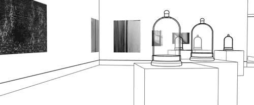

We shared some of artist Ryan Kuo's works throughout the course of fruitful school winter 2020. Recently, Ryan was a technology resident at Pioneer Works, where fruitful school was hosted. Because of these overlaps and our curiosity about Ryan’s work, we thought it might be nice to have a conversation…
The following was transcribed and edited from a video chat the morning of Wednesday, February 5th.
How did you come to centering your work around the HTML element <table> for the Queens International 2018 exhibition site?
The exhibition is called “Volumes,” and I was interested in the idea of containment. When content is surfaced on the screen, it sometimes seems like it’s materializing from thin air. But it’s always entering into a pre-existing hierarchy.
In any group exhibition, artists are put together and framed, whether intentionally or unintentionally. There are many overlapping acts of framing—curatorial, physical, subliminal … lateral associations between artists, works, and spaces.
The curatorial staff at Queens Museum had their own granular systems for keeping track of everything. They used indexical Google Sheets and many multicolored labels on their Gmail inboxes, for instance.
Instead of designing a new system to reflect all this organization, I wanted to offload the mental overhead onto an existing model. With an HTML <table>, everything has to sit side-by-side, fit together, and align into a consistent body on the screen. So <table> seemed like a straightforward way to organize a ton of information.
Because I’ve experimented a little with <table> in the past, I knew it could become something other than a default <table>.

The table element is inherently architectural, and one goal of mine was to do a “virtual walkthrough” of the space. Since I have a background as a video game journalist, this seemed intuitive. If you’re trying to show a really complicated space, and if you want the exhibition website to have some use value after the closing … why not have some 3D representation of what was there? So my summer intern Ted Kim and I incorporated animated GIFs. These were walkthroughs and gestures performed within SketchUp, using the museum’s 3D model used to plan the exhibition.
|  |

|
The text that appears at the top of the website is generated from a Markov chain that processes the content on each page. It rearranges the text incorrectly on purpose—the idea is that an institution will always frame you, as an artist, somewhat incorrectly. There is always unintentional slippage or mistranslation happening when an institution frames an artist’s intentions or statements. Then there is this process of realignment in both directions.
The formal style of this generated text is uppercase, similar to the official, bureaucratic-feeling “QUEENS MUSEUM” signage on the actual building.
How did you make the website? And is it true there is no CMS?
I coded the website from the ground up (with just HTML, CSS, and some JavaScript) in Sublime Text. This was my first time building a website from scratch. (My portfolio site is a heavily modified Cargo.)
And that’s right, there is no CMS. I didn’t know that most people use a CMS to update websites. With the museum, we had a couple rounds of updates… I would just build new parts onto the site.
While I did create a few starter templates, every page was crafted around the content. I would copy and paste text, like the artist interviews, into the template. But there would often be something a little off… so I would tweak the <table> cells to fit together in a better way. So there both is and isn’t a site template… it was an interesting combination of streamlined and very manual.
It seems like you make a lot of websites or apps to use as tools within performances or presentations, but you also often allow the tools to be viewed by themselves. Can you say more about these two?
People either think I have to “be there” to perform the work, or that I have to make the work perform itself. But I never want to settle for either.
If I take you through my work in person, and it becomes a live thing that you can’t separate from me, that is the way it should be. It’s my work. Conversely, I don’t want to have to be there. Anyone who spends a little time with the work could get the feeling of it. I’ve never differentiated between work that is self-contained and work that is a performance object.
For instance, when I perform my hyperlinked artist talk “Example,” it reflects exactly my thinking and feeling at the time I was making it. I made it using Twine. I knew that the live performance of the website would be scripted. So I wanted to lean on the website I created to bring me back to that time I was making it.
To be convincing in public space in America means that there is always a script behind how I present myself. When people are looking, I need to know exactly where I am in the present moment. Otherwise I’d be lost. So the works literally direct what I’m thinking about in the moment they are performed. They help me to be present in future scripted encounters.
There’s a nice feedback loop when making websites… you do some writing, plug it into the code, and then read it through on the screen. You make adjustments and do it again.
How do you know when a performance object you’ve made is complete?
It’s when the system or world I put together starts to feel like it’s repeating, stuttering, circling… it’s actively revising itself. Maybe it feels stuck… it’s going back and forth… it’s heading in the direction of being successful, but never resolving clearly. This feels true to me. Just through its being, it conveys the way I feel about it.
Ryan Kuo lives and works in New York City. His works are process-based and often invoke a person arguing and taking up white space out of resentment and necessity.